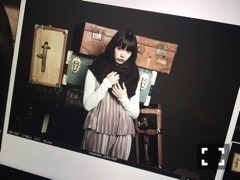
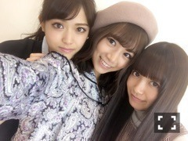

| 2016/10 20 Thu | ひめたん-0o0-その676 |
若者ビジネスプランコンテスト2016
Business Creation Hiroshima!
「びっくり！広島」
スペシャルサポーターとして
先日記者会見に参加させて頂きました～
広島と東京の学生の皆さんからの
世界をびっくりさせるアイディア
お待ちしてます( ˇωˇ )
詳しくはこちらをチェック！

うたコン 心踊るダンスパーティー！
生放送でした！
メールでの急な告知になりましたが
観てくださった方ありがとう～
「センチメンタル・ジャーニー」
「夏色のナンシー」
コラボさせていただきました。
乃木坂46として
「気づいたら片想い」歌いました。
初出演ということもあり
ずっと緊張しっぱなしでしたが
とても素敵な時間になりました( ˇωˇ )

16thシングル「サヨナラの意味」
表題曲音源解禁、
ジャケ写公開されました！
「サヨナラの意味」
「孤独な青空」
「君に贈る花がない」を歌ってます。
サンエト楽曲「君に贈る花がない」は
我らがらじらー！サンデーにて
解禁させて頂く予定です。お楽しみに～
昨日のANNにて
ななみんの卒業発表がありましたね。
リアルタイムで聞いてました、
月並みな表現で申し訳ないのですが
ななみんの紡ぐ言葉のひとつひとつに
グッとくるものがあるなぁと。
説得力があって、意志の強さがあって、
それでいてやさしさに溢れていて。
卒業まであと4ヶ月、
たくさん思い出作りたいな(^o^)
披露するの楽しみです！いっぱい歌おう！
この曲がたくさんの人に届きますように！

お知らせしたいこと色々ある！
けどまだ言えないことたくさんある！
タイミング逃して
事後報告になっちゃったらごめんなさい～
今日写メめっちゃきいちゃん！笑
最後になりますが、
前回のブログに
たくさんのコメント寄せていただきました
本当にありがとうございました。
前向きな言葉を並べてみました、
強がりとかでなく
素直に思ったことを書いたつもりです
悩むことはたくさんあります、
寧ろ悩んでばかりです、が、
それだけお仕事に夢中なんだと思います。
そんな自分も楽しめるようになれたら
もっと視界が開けるんだろうな～
これからもよろしくお願いします( ˇωˇ )
今週末久々に握手会ですね！
新曲の感想など、是非聞かせて下さい。
ではでは！
(＊´・ω・＊)
コメント(538)
2016/10/20 23:06